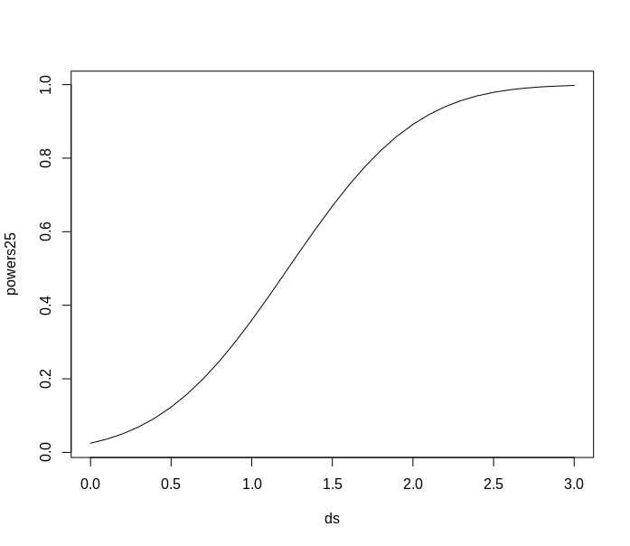
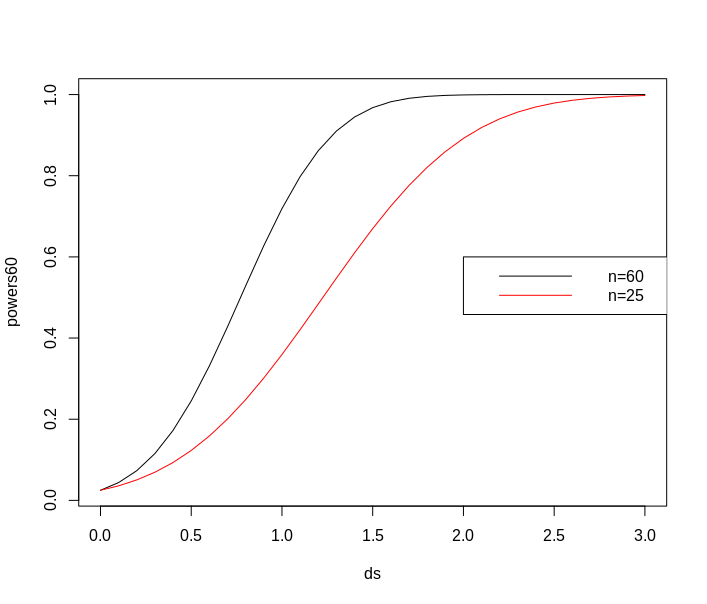

3 Sample Size and Statistical Power
3.5 Transport times
A company, MM, selling items online wants to compare the transport times for two transport firms for delivery of the goods. To compare the two companies recordings of delivery times on a specific route were made, with a sample size of n = 9 for each firm. The following data were found:
note that d is the SI unit for days. It is assumed that data can be regarded as stemming from normal distributions.
a)
We want to test the following hypothesis
What is the p-value, interpretation and conclusion for this test (at α = 5% level)?
\text{p-value} = 0.09221726 is more than \alpha=0.05 , so we have to accept H_0, that means there is no significant difference between for two transport firm for delivery of the goods.
t.test2 <- function(m1,m2,s1,s2,n1,n2,m0=0,equal.variance=FALSE, conf.int=0.05)
{
if( equal.variance==FALSE )
{
se <- sqrt( (s1^2/n1) + (s2^2/n2) )
# welch-satterthwaite df
df <- ( (s1^2/n1 + s2^2/n2)^2 )/( (s1^2/n1)^2/(n1-1) + (s2^2/n2)^2/(n2-1) )
} else
{
# pooled standard deviation, scaled by the sample sizes
se <- sqrt( (1/n1 + 1/n2) * ((n1-1)*s1^2 + (n2-1)*s2^2)/(n1+n2-2) )
df <- n1+n2-2
}
CI <- m1-m2 + c(-1,1)*qt(1-conf.int/2, df)*sqrt(s1^2/n1+s2^2/n2)
t <- (m1-m2-m0)/se
dat <- c(m1-m2,df , se, t, 2*pt(-abs(t),df), CI)
names(dat) <- c("Difference of means", "df" , "Std Error", "t", "p-value", "CI low", "CI high")
return(dat)
}
> t.test2(m1=1.93, m2=1.49, s1=0.45, s2=0.58, n1=9, n2=9)
Difference of means 0.44000000
df 15.06964679
Std Error 0.24469936
t 1.79812484
p-value 0.09221726
CI low -0.08135448
CI high 0.96135448
b)
Find the 95% confidence interval for the mean difference µA − µB.
From the output above:
c)
What is the power of a study with n = 9 observations in each of the two samples of detecting a potential mean difference of 0.4 between the firms (assume that σ = 0.5 and that we use α = 0.05)?
Answer: From the output below, we can see that the power is 0.358, which is basically the probability of correctly rejecting H_0 if H_0 is false.
> power.t.test(n=9, delta=0.4, sd=0.5, sig.level=0.05)
Two-sample t test power calculation
n = 9
delta = 0.4
sd = 0.5
sig.level = 0.05
power = 0.357765
alternative = two.sided
NOTE: n is number in *each* group
d)
What effect size (mean difference) could be detected with n = 9 observations in each of the two samples with a power of 0.8 (assume that σ = 0.5 and that we use α = 0.05)?
Answer: From the output below we can see, that 0.7 mean difference could be detected with given values.
> power.t.test(n=9, sd=0.5, sig.level=0.05, power=0.8)
Two-sample t test power calculation
n = 9
delta = 0.7034721
sd = 0.5
sig.level = 0.05
power = 0.8
alternative = two.sided
NOTE: n is number in *each* group
e)
How large a sample size (from each firm) would be needed in a new investigation, if we want to detect a potential mean difference of 0.4 between the firms with probability 0.90, that is with power=0.90 (assume that σ = 0.5 and that we use α = 0.05)?
Answer: From the output below we can see that we would be needed a sample size with 34 observations in a new investigation with given values.
> power.t.test(sd=0.5, sig.level=0.05, power=0.9, delta=0.4)
Two-sample t test power calculation
n = 33.82555
delta = 0.4
sd = 0.5
sig.level = 0.05
power = 0.9
alternative = two.sided
NOTE: n is number in *each* group
3.10 Concrete items
A construction company receives concrete items for a construction. The length of the items are assumed reasonably normally distributed. The following requirements for the length of the elements are made \mu=3000mm. The company samples 9 items from a delivery which are then measured for control. The following measurements (in mm) are found: 3003, 3005, 2997, 3006, 2999, 2998, 3007, 3005, 3001.
a)
A study is planned of a new supplier. It is expected that the standard deviation will be approximately 3, that is, σ = 3 mm. We want a 90% confidence interval for the mean value in this new study to have a width of 2 mm. How many items should be sampled to achieve this?
> (qnorm(1-0.1/2)*3/1)^2
[1] 24.34989
b)
Answer the sample size question above but requiring the 99% confidence interval to have the (same) width of 2 mm.
By increasing the confidence interval to 99%, we have to increase the sample size to 60.
> (qnorm(1-0.01/2)*3/1)^2
[1] 59.71407
d)
Now a new experiment is to be planned. In the first part above, given some wanted margin of error (ME) a sample size of n = 25 was found. What are each of the probabilities that an experiment with n = 25 will detect effects corresponding to (”end up significant for”) μ 1 = 3001, 3002, 3003 respectively? Assume that we use the typical α = 0.05 level and that σ = 3?
Answer From the output below the three probabilities are 0.36, 0.89 and 0.998 for respectively 1, 2 and 3 deltas, which are found by 3001-3000=1 etc.
> power.t.test(sd=3, n = 25, sig.level=0.05, delta = 1:3, type="one.sample")
One-sample t test power calculation
n = 25
delta = 1, 2, 3
sd = 3
sig.level = 0.05
power = 0.3594721, 0.8920169, 0.9976846
alternative = two.sided
Plot of powers with n=25
ds = seq(0, 3, 0.1)
powers25 <- power.t.test(n = 25, delta = ds, sd = 3, sig.level = 0.05,
type = c("one.sample"))$power
plot(ds, powers25, type = "l")

e)
One of the sample size computation above led to n = 60 (it is not so important how/why). Answer the same question as above using n = 60.
Answer: Now we can see that the probabilities increased to 0.719, 0.999, 1.0.
> power.t.test(sd=3, n = 60, sig.level=0.05, delta = 1:3, type="one.sample")
One-sample t test power calculation
n = 60
delta = 1, 2, 3
sd = 3
sig.level = 0.05
power = 0.7189760, 0.9990908, 1.0000000
alternative = two.sided
ds = seq(0, 3, 0.1)
powers60 <- power.t.test(n = 60, delta = ds, sd = 3, sig.level = 0.05,
type = c("one.sample"))$power
plot(ds, powers60, type = "l")
lines(ds, powers25, col="red")
legend(2,0.6,c("n=60", "n=25"), col=c("black", "red") , lty=c(1,1))

f)
What sample size would be needed to achieve a power of 0.80 for an effect of size 0.5?
Answer: The sample size of 285 would be needed to achieve a power of 0.80 for an effect of size 0.5
> power.t.test(sd=3, sig.level=0.05, power=0.80,delta =0.5, type="one.sample")
One-sample t test power calculation
n = 284.4864
delta = 0.5
sd = 3
sig.level = 0.05
power = 0.8
alternative = two.sided
g)
Assume that you only have the finances to do an experiment with n = 50. How large a difference would you be able to detect with probability 0.8 (i.e. Power = 0.80)?
Answer: Only the difference of 1.21 would be able to be detected with probability 0.8 and n=50, so a true alternative mean of 2998.8 (or smaller) or 3001.2 (or larger) would be detected by this experiment.
> power.t.test(sd=3, n = 50, sig.level=0.05, power=0.80, type="one.sample")
One-sample t test power calculation
n = 50
delta = 1.212554
sd = 3
sig.level = 0.05
power = 0.8
alternative = two.sided